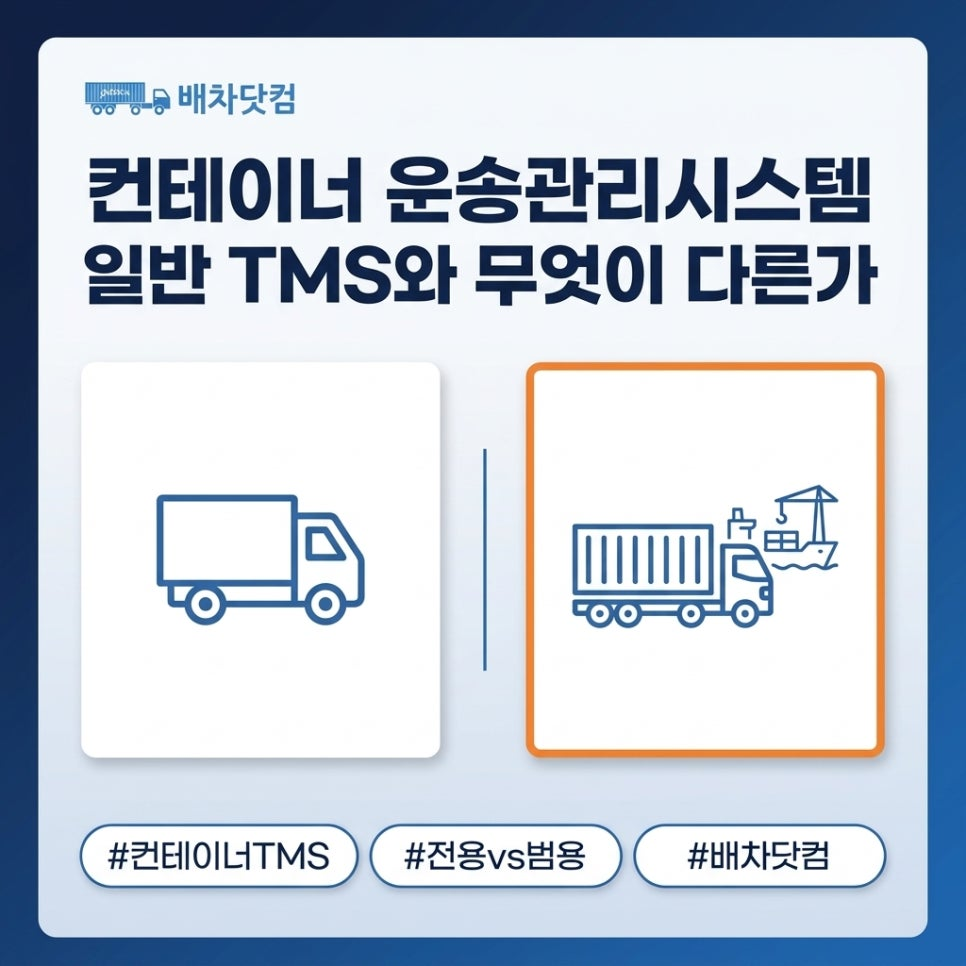
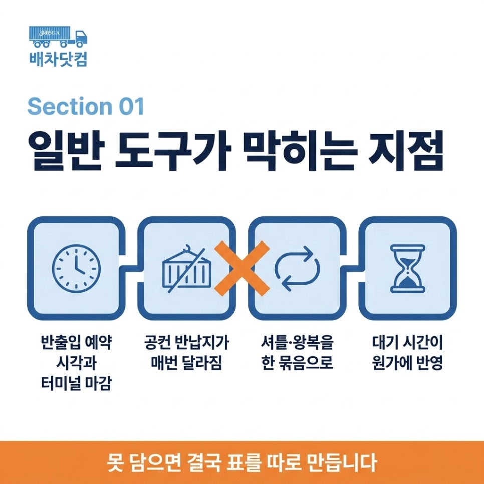
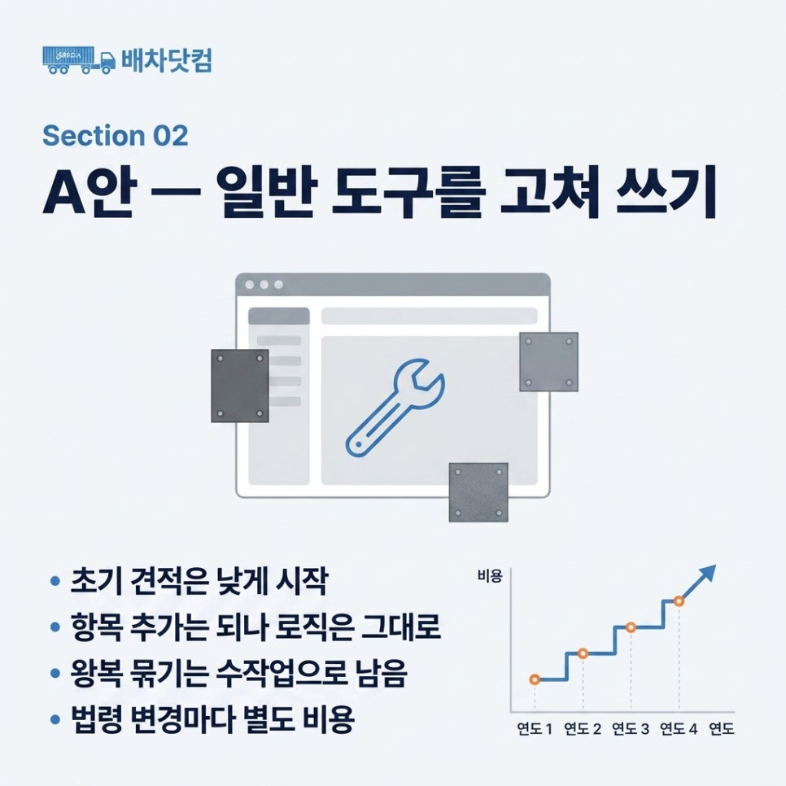
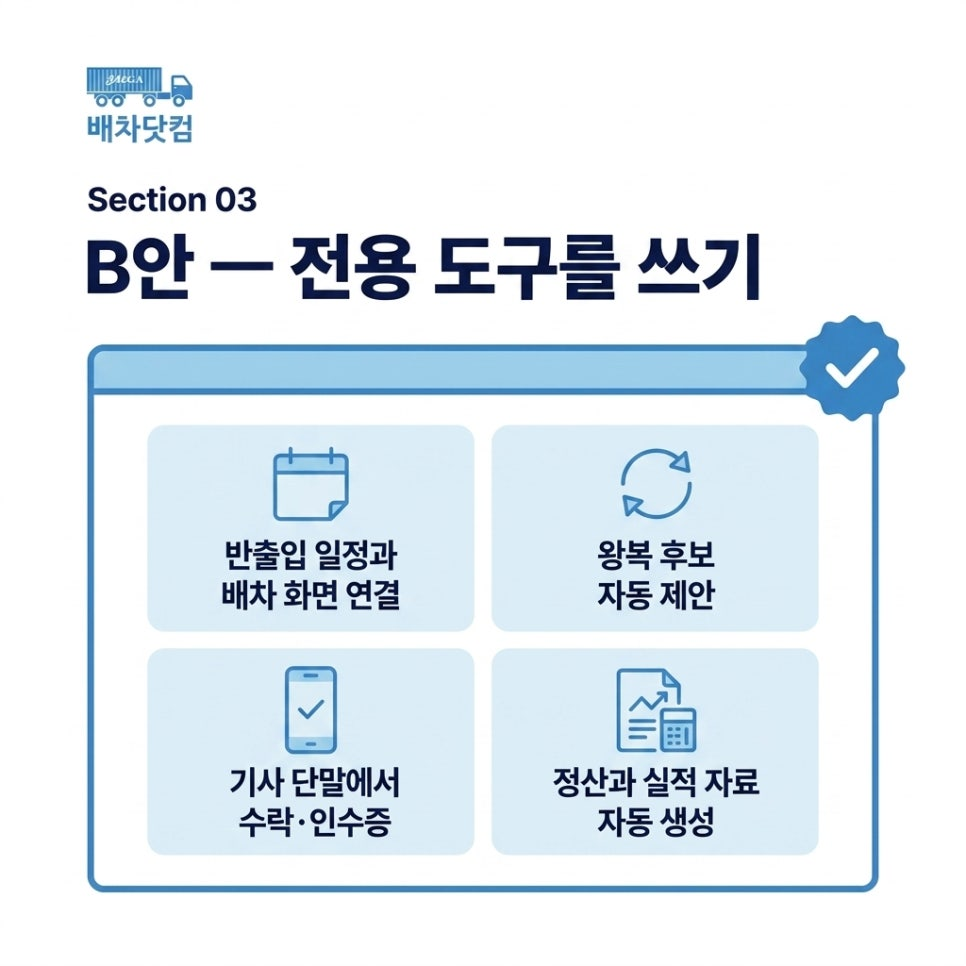
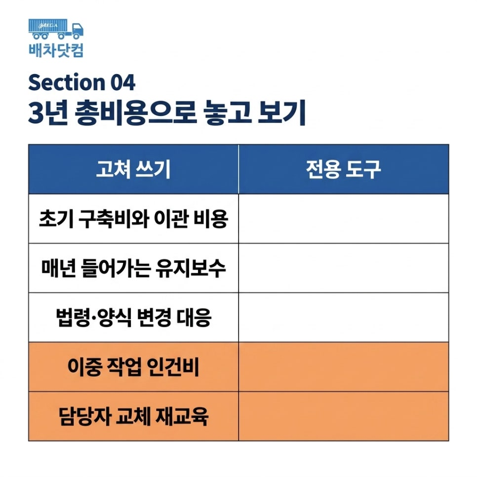
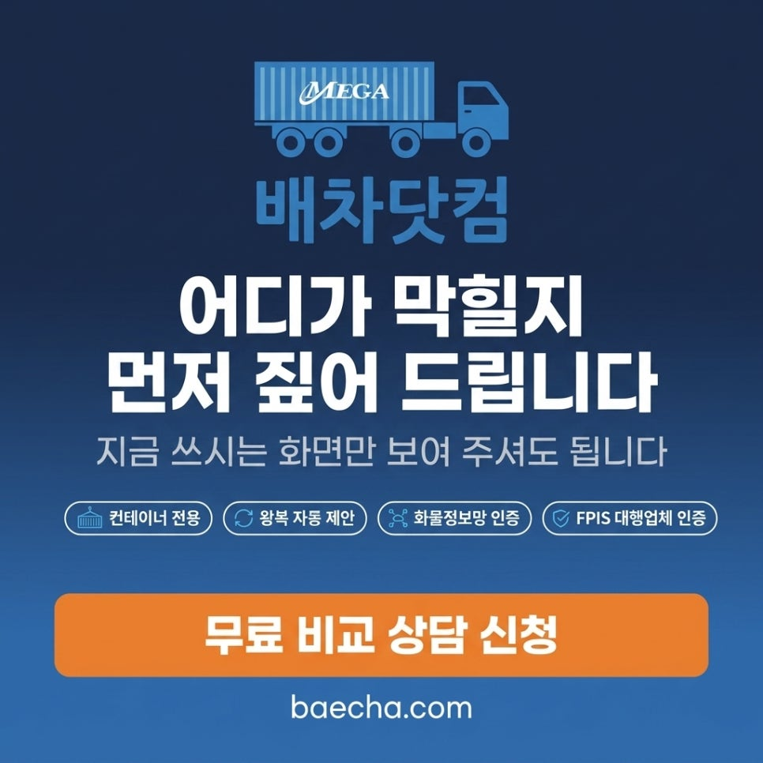

안녕하세요. 컨테이너 수송 전용 관리 프로그램 배차닷컴을 개발·공급하는 ㈜위솔루션입니다.
일반 화물용 프로그램을 도입했다가 반년 만에 다시 엑셀로 돌아온 회사를 여러 번 봤습니다. 기능이 부족해서가 아니라, 부두 일정이라는 변수를 담을 자리가 애초에 없었기 때문입니다. 컨테이너 운송관리시스템이 왜 따로 존재하는지 비교해서 정리했습니다.
Section 01
일반 도구가 막히는 지점

일반 화물은 보내는 곳과 받는 곳이 정해지면 끝입니다. 부두 일은 그렇지 않습니다. 같은 구간을 뛰어도 배가 언제 들어오느냐에 따라 하루 일정이 통째로 다시 짜입니다.
- 반출입 예약 시각과 터미널 마감
- 공컨 반납지가 매번 달라짐
- 셔틀·왕복을 한 묶음으로 잡아야 함
- 대기 시간이 원가에 직접 반영됨
이 네 가지를 화면에 못 넣으면 결국 사람이 따로 표를 만듭니다. 프로그램을 쓰면서 표도 쓰는 이중 작업이 시작되는 지점이죠. 컨테이너 운송관리시스템이 별도 제품군으로 존재하는 이유가 여기 있습니다.
Section 02
A안 : 일반 도구를 고쳐 쓰기

이미 쓰던 것에 항목을 붙이는 방식입니다. 직원들이 익숙하다는 게 가장 큰 장점이고, 결재 올리기도 수월합니다.
- 초기 견적은 낮게 시작합니다
- 항목 추가는 되지만 로직은 잘 안 바뀝니다
- 왕복 묶기는 대개 수작업으로 남습니다
- 개발사가 항만 업무를 모르면 요구 설명에만 몇 주가 갑니다
무엇보다 법이 바뀌거나 제출 양식이 바뀔 때마다 별도 비용이 붙습니다. 3년쯤 지나면 처음 아꼈던 금액이 사라져 있습니다. 요청할 때마다 개발 일정을 기다려야 한다는 점도 현장에서는 꽤 큰 부담입니다.
Section 03
B안 : 전용 도구를 쓰기

컨테이너 운송관리시스템은 그 변수들을 기본값으로 깔고 시작합니다.
처음부터 들어 있는 것
- 반출입 일정과 배차 화면의 연결
- 왕복 후보 자동 제안
- 기사 단말에서 수락·인수증 처리
- 정산과 실적 자료의 자동 생성
대신 우리 회사만의 특이한 업무 순서는 맞춰야 할 수도 있습니다. 다만 그 조정은 항목 몇 개 수준이지, 구조를 새로 짜는 일은 아닙니다. 부두 업무를 아는 쪽과 이야기하면 설명에 드는 시간부터 확 줄어듭니다.
Section 04
3년 총비용으로 놓고 보기

한 해만 보면 고쳐 쓰는 쪽이 싸 보입니다. 판단은 3년 치를 합산해서 하셔야 합니다. 계약서에 적힌 금액과 실제로 나가는 돈이 다른 항목들이 아래에 숨어 있습니다.
- 초기 구축비와 이관 비용
- 매년 들어가는 유지보수
- 법령·양식 변경 대응 비용
- 이중 작업에 들어가는 인건비
- 담당자 교체 시 재교육 비용
마지막 두 항목이 견적서에는 안 적히지만 실제로는 가장 큽니다. 컨테이너 운송관리시스템을 검토할 때 이 둘을 빼놓으면 비교 자체가 성립하지 않습니다. 월 20만 원 차이보다 매달 반복되는 이중 입력 40시간이 훨씬 비쌉니다.
Section 05
우리 회사는 어느 쪽인가

정답이 하나는 아닙니다. 일반 화물 비중이 높고 부두 물량이 가끔이라면 고쳐 쓰는 쪽도 괜찮습니다. 아래 조건에 많이 걸릴수록 전용 쪽이 맞습니다.
- 부두 왕복 비중이 절반을 넘는다
- 대기 시간 때문에 원가가 흔들린다
- 가맹 허가나 실적 제출 요건을 함께 봐야 한다
- 기사에게 앱을 쥐여 줄 계획이 있다
- 담당자 한 명에게 업무가 몰려 있다
배차닷컴은 화물정보망 인증과 화물운송실적신고(FPIS) 대행업체 인증을 갖춘 부두 특화 컨테이너 운송관리시스템입니다. 메가로지스·에스엔씨로직스·칸·씨에스에스·중흥·위세이프 여섯 곳이 쓰고 있고, 도입 전에 현재 업무 흐름부터 같이 그려 드립니다.
지금 쓰시는 화면만 보여 주셔도 어디가 막힐지 짚어 드릴 수 있습니다. 컨테이너 운송관리시스템은 기능 개수가 아니라 현장 변수를 담는지로 고르셔야 합니다.
이 글은 네이버 블로그에 먼저 실린 글입니다.